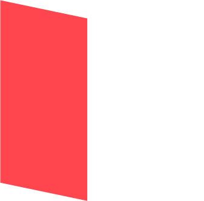
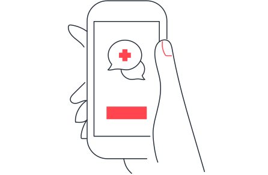
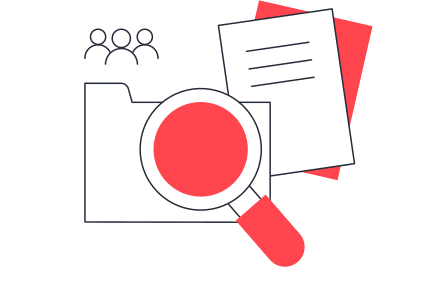
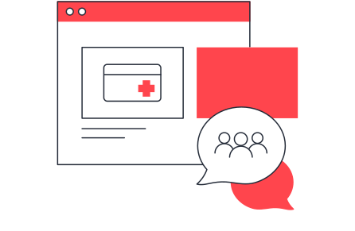
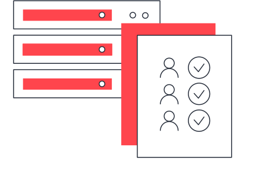
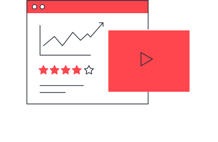
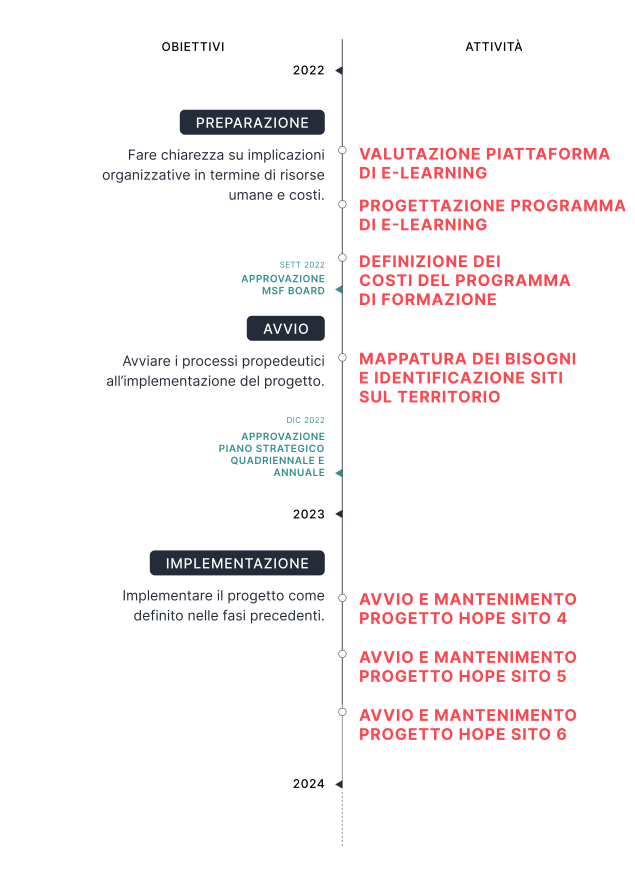

home
Progetto Hope
Sportello di orientamento sociosanitario rivolto a migranti, rifugiati, richiedenti asilo e persone che vivono in condizioni di marginalità sociale, per facilitare e supportare il loro accesso ai servizi del sistema sanitario nazionale.

Mission
Intervento umanitario
A chi È rivolto
professionisti
pensionati
studenti universitari
ad oggi
40
Project activists per
il progetto Hope
per il 2024
300
Project activists previsti per il progetto Hope
Journey
Come partecipare
al progetto
Awareness
Cristina legge la sponsorizzata di MSF che annuncia un evento informativo sul progetto HOPE, che verrà lanciato a breve nella sua città.
Cristina è interessata a saperne di più e si iscrive all'evento, compilando il modulo di contatto.

Onboarding
Cristina partecipa all'evento informativo e lascia il proprio contatto per essere informata sulle modalità e i tempi di partecipazione al progetto. Pochi giorni dopo, riceve una comunicazione da MSF contenente il form di partecipazione al progetto HOPE, lo compila e lo invia.
Cristina riceve il link ai materiali d'induction, che gli permetteranno di conoscere più da vicino MSF, la sua mission e i suoi valori. Al termine, ha accesso ad una sezione dedicata della community platform, dove potrà consultare moduli formativi, approfondimenti e strumenti funzionali al progetto.

Strumento chiave

Main activities
Cristina segue in autonomia i moduli formativi propedeutici alla partecipazione al progetto HOPE e si confronta con i volontari di altre città che contribuiscono già al progetto.
Inoltre incontra il resto del gruppo che parteciperà al progetto e alcuni volontari esperti di altre città, in cui il progetto è già avviato.
Una volta completata la formazione, Cristina partecipa alle attività di orientamento socio-sanitario dello sportello HOPE affiancata da un volontario esperto.
Strumento chiave

Monitoring
A fine turno, Cristina carica i dati delle persone che hanno fruito del servizio nel Database dedicato.
Cristina viene ringraziata per il suo contributo e riceve comunicazioni e insight ritagliati sui suoi interessi e sulle sue passioni.

Upgrading
Le attività e le interazioni di Cristina sulla piattaforma vengono salvate e analizzate in forma aggregata per migliorare le proposte della community e conoscere livello di engagement dei suoi membri.
Cristina segue la formazione di approfondimento e aggiornamento che è stata sviluppata sulla base dei feedback ricevuti da lei e dal resto del gruppo di volontari.

KPI
Una serie di indicatori per misurare l’efficienza del Nuovo Modello di Volontariato in relazione al progetto.

Milestone
Le tappe per raggiungere i nostri obiettivi legati al progetto Hope.

Cosa pensi del nuovo modello di volontariato?
Come possiamo rendere quest’esperienza utile e soddisfacente,per il volontario e per tutta la community MSF?
Raccontaci la tua idea